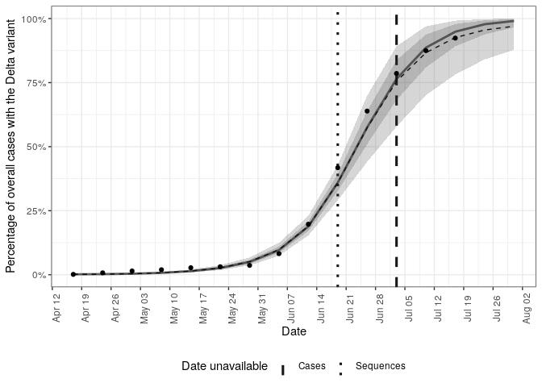
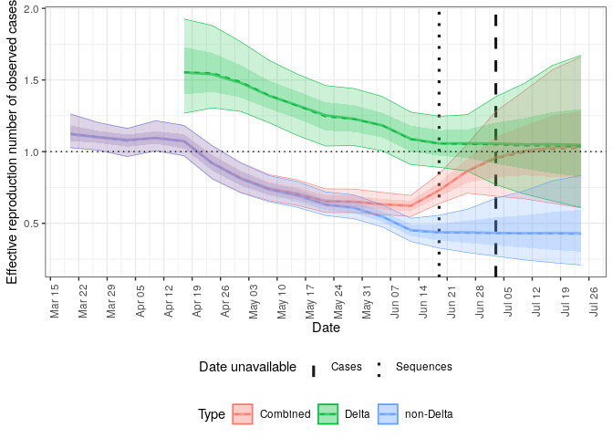
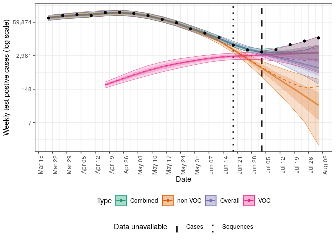
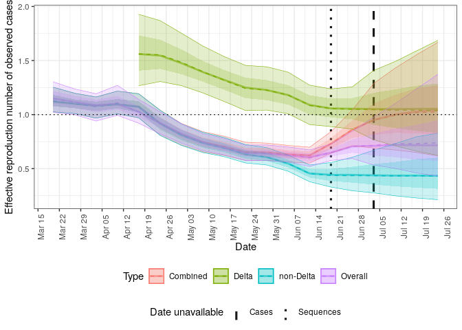

Forecast case notifications using variant of concern strain dynamics
This package contains models and processing code to allow sequencing of variants of concern to be used to forecast case notifications.
Installation
Either install the package from GitHub using the following,
devtools::install_github("epiforecasts/forecast.vocs", dependencies = TRUE)Install stan to enable model fitting and forecasting using:
cmdstanr::install_cmdstan()Quick start
This quick start uses data from Germany that includes COVID-19 notificatons and sequences with sequences either being positive or negative for the Delta variant.
Step by step forecast
library(forecast.vocs)
options(mc.cores = 4)
obs <- filter_by_availability(
germany_covid19_delta_obs,
date = as.Date("2021-07-05")
)
curr_obs <- latest_obs(germany_covid19_delta_obs)
dt <- stan_data(obs, horizon = 4)
model <- load_model(strains = 2)
inits <- stan_inits(dt, strains = 2)
fit <- stan_fit(
data = dt, model = model, init = inits,
adapt_delta = 0.99, max_treedepth = 15,
refresh = 0, show_messages = FALSE
)
#> Running MCMC with 4 parallel chains...
#>
#> Chain 4 finished in 42.2 seconds.
#> Chain 2 finished in 43.4 seconds.
#> Chain 3 finished in 47.5 seconds.
#> Chain 1 finished in 55.6 seconds.
#>
#> All 4 chains finished successfully.
#> Mean chain execution time: 47.2 seconds.
#> Total execution time: 55.7 seconds.
#>
#> Warning: 15 of 4000 (0.0%) transitions ended with a divergence.
#> This may indicate insufficient exploration of the posterior distribution.
#> Possible remedies include:
#> * Increasing adapt_delta closer to 1 (default is 0.8)
#> * Reparameterizing the model (e.g. using a non-centered parameterization)
#> * Using informative or weakly informative prior distributions
posterior <- summarise_posterior(fit)
posterior <- update_voc_label(posterior, "Delta")Plot the posterior prediction for cases.
plot_cases(posterior, curr_obs, log = TRUE)
Plot the posterior prediction for the fraction of cases that have the Delta variant.
plot_voc(posterior, curr_obs, voc_label = "Delta variant")
Plot the posterior estimate for the effective reproduction number of Delta and non-Delta cases.
plot_rt(posterior)
Forecast wrapper
Run a complete forecast for both the one and two strain models using the forecast function. This provides a wrapper around the individual functions used above. Multiple forecasts can be performed efficiently across dates and scenarios using forecast_across_dates() and forecast_accross_scenarios().
forecasts <- forecast(obs,
strains = c(1, 2),
adapt_delta = 0.99, max_treedepth = 15,
refresh = 0, show_messages = FALSE,
probs = c(0.05, 0.2, 0.8, 0.95)
)
#> Running MCMC with 4 parallel chains...
#>
#> Chain 4 finished in 16.5 seconds.
#> Chain 3 finished in 17.4 seconds.
#> Chain 1 finished in 18.5 seconds.
#> Chain 2 finished in 19.9 seconds.
#>
#> All 4 chains finished successfully.
#> Mean chain execution time: 18.1 seconds.
#> Total execution time: 20.0 seconds.
#> Running MCMC with 4 parallel chains...
#>
#> Chain 3 finished in 40.7 seconds.
#> Chain 4 finished in 41.7 seconds.
#> Chain 2 finished in 44.3 seconds.
#> Chain 1 finished in 53.4 seconds.
#>
#> All 4 chains finished successfully.
#> Mean chain execution time: 45.0 seconds.
#> Total execution time: 53.4 seconds.
forecasts
#> id forecast_date strains overdispersion variant_relationship r_init
#> 1: 0 2021-07-03 1 TRUE pooled 0,0.25
#> 2: 0 2021-07-03 2 TRUE pooled 0,0.25
#> voc_scale error fit data fit_args samples max_rhat
#> 1: 0,0.2 <CmdStanMCMC[30]> <list[20]> <list[5]> 4000 1.006131
#> 2: 0,0.2 <CmdStanMCMC[30]> <list[20]> <list[5]> 4000 1.004719
#> divergent_transitions per_divergent_transitons max_treedepth
#> 1: 2 0.00050 11
#> 2: 7 0.00175 11
#> no_at_max_treedepth per_at_max_treedepth posterior
#> 1: 782 0.1955 <data.table[164x19]>
#> 2: 740 0.1850 <data.table[448x19]>
#> forecast
#> 1: <data.table[10x12]>
#> 2: <data.table[48x12]>Unnest posterior estimates from each model.
posteriors <- unnest_posterior(forecasts)Update variant of concern labels for the summarised posterior estimates.
posteriors <- update_voc_label(posteriors, "Delta")Generate summary plots for the forecasts:
plots <- plot_posterior(
posteriors, curr_obs,
voc_label = "Delta variant"
)Plot the posterior prediction for cases for both models.
plots$log_cases
Plot the posterior estimate for the effective reproduction number of Delta, non-Delta cases, and overall.
plots$rt